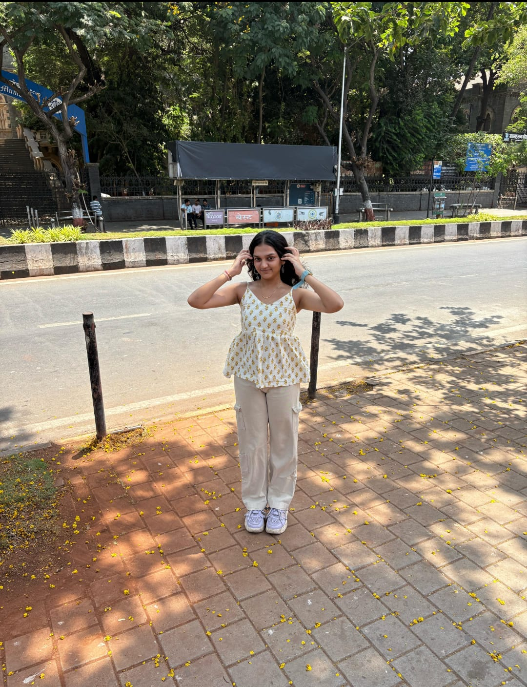

Sharayu
Age: 19 • MBBS Student • Dance • Art • Cats
A vibrant and passionate soul, Sharayu is a dedicated MBBS student with a heart full of creativity. She finds joy in the graceful rhythm of dance and the expressive world of art. Her compassionate nature and keen sense of detail make her not just a wonderful student, but an inspiring human being. With a smile that lights up any room and a mind focused on healing and helping others, she's destined to make a mark in the world of medicine.

Ishwar
Age: 19 • IIT Bombay • Cricket • Guitar • Gym
Ishwar is a brilliant engineering student at IIT Bombay, fueled by curiosity and a drive to innovate. Whether strumming soulful melodies on his guitar, hitting sixes on the cricket ground, or pushing limits at the gym, he lives each moment with purpose and passion. With a sharp intellect and a creative heart, Ishwar embodies the perfect balance between technical genius and artistic flair, making him a true modern-day polymath.